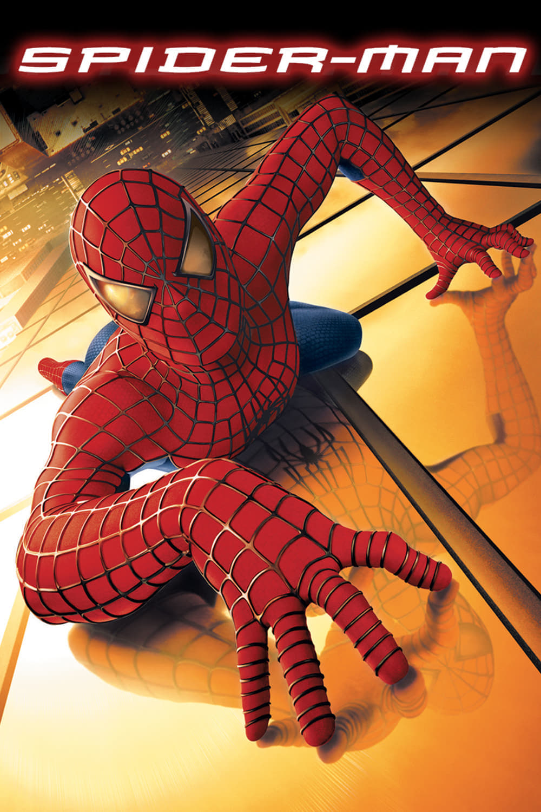

Мировая премьера: 3 мая 2002
Слоган: Один герой приглашает вас в потрясающий вираж.
Сюжет: Обычный старшеклассник Питер Паркер обретает невероятные способности после того, как его случайно укусил генетически изменённый паук. Когда его дядя погибает во время ограбления, Питер решает отомстить за его смерть и избавиться от уличной преступности. Став Человеком-Пауком, он использует свой необычный дар, чтобы добиться взаимности от своей одноклассницы Мэри Джейн Уотсон и защитить Нью-Йорк от коварного супер-злодея Зелёного Гоблина.
Режиссёр: Сэм Рэйми
В основе: Комиксы о Человеке-Пауке (США, выходят с 1962, издательство "Марвел Комикс")
Серия: Человек-Паук
В ролях: Тоби Магуайр, Уиллем Дефо, Кирстен Данст
| Тоби Магуайр | Питер Паркер / Человек-Паук |
| Уиллем Дефо | Доктор Норман Осборн / Зелёный Гоблин |
| Кирстен Данст | Мэри Джейн Уотсон |
| Джеймс Франко | Хэрри Осборн |
| Клифф Робертсон | Бен Паркер |
| Розмари Харрис | Мэй Паркер |
| Дж.К. Симмонс | Джей Джона Джеймисон |
| Стэнли Андерсон | Генерал Слокем |
| Брюс Кэмпбелл | Конферансье |
| Джерри Бекер | Максимилиан Фаргас |
| Билл Нанн | Джозеф "Робби" Робертсон |
| Джек Беттс | Генри Болкен |
| Рон Перкинс | Доктор Менделл Стромм |
| Джо Манганьелло | Юджин "Флеш" Томпсон |
| Тед Рэйми | Хоффман |
| Элизабет Бэнкс | Бетти Брант |
| Октавия Спенсер | Регистратор |
Бюджет: $ 139 млн.
Кассовые сборы в США: $ 407 млн.
Кассовые сборы в мире: $ 827 млн.
Продолжительность: 1 ч. 56 мин.
Рейтинг: 7.4